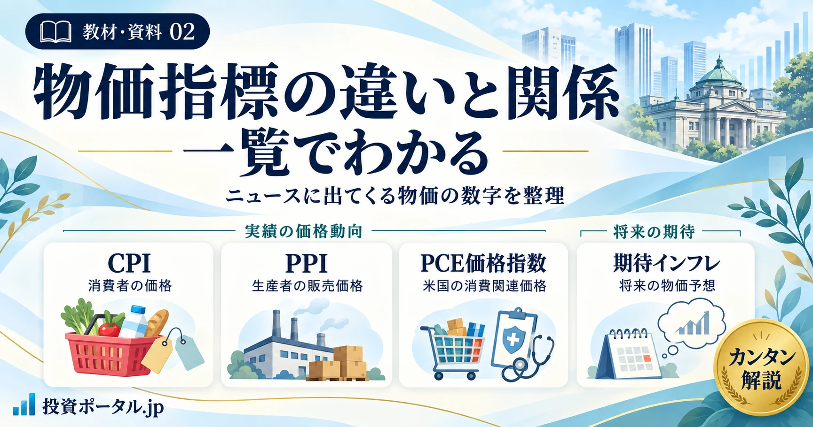

教材・資料 02 ／ 物価の全体像
物価指標の違いと関係を一覧で解説｜CPI・PPI・PCE・期待インフレ

物価ニュースを「何を測る数字か」から整理する
「CPIは鈍化したのに、PPIは上昇」「PCEが市場予想を上回った」。こうしたニュースは、必ずしも矛盾していません。対象とする価格や集計範囲、比較する期間が異なるからです。
このページは、物価指標の違い・つながり・ニュースでの使い分けを確認する教材です。各統計の細かな仕組みは個別記事へ、金利との関係は教材01へ進めます。
CPI・PPI・PCE価格指数は、実際の価格動向を統計として把握する指標です。一方、期待インフレ率は将来の物価上昇についての予想です。実績の統計と将来の期待を分けて読みましょう。
本ページのPPI・PCE価格指数は主に米国の統計を指します。CPIは日米を区別し、日本の企業物価指数は別の統計として補足します。指数の水準と、その変化率である物価上昇率も区別します。
1．CPI・PPI・PCE・期待インフレの比較表
見分ける軸は買い手か売り手か、どこまで含むか、実績か予想かです。スマートフォンでは表を左右にスクロールできます。
| 比較する点 | CPI（日米を区別） | PPI（米国） | PCE価格指数（米国） | 期待インフレ率 |
|---|---|---|---|---|
| 何を表す？ | 消費者が購入する財・サービスの価格変化。日本と米国にそれぞれのCPIがある。 | 米国の国内生産者が、財・サービスの販売で受け取る価格の変化。 | 米国の個人消費支出に関する価格変化。PCE（支出額）そのものとは区別。 | 将来の物価上昇率についての予想。単一の公式指数ではない。 |
| 実績／予想 | 実績の価格を統計化。 | 実績の販売価格を統計化。 | 実績の消費関連データから推計。改定されることがある。 | 将来予想。調査回答や市場価格などから把握する。 |
| 主に見る段階 | 家計が購入する段階。 | 売り手・生産者側。中間需要だけでなく最終需要も対象。 | 家計等の消費段階。家計のために第三者が支払う分も含む。 | 特定の取引段階ではなく、将来の物価に対する見方。 |
| 公表主体 | 日本：総務省統計局。米国：BLS（労働統計局）。 | 米国：BLS。日本の企業物価指数は日本銀行が公表する別統計。 | 米国：BEA（経済分析局）。FRBが作成する統計ではない。 | 調査機関・中央銀行など。市場由来の指標は債券価格等を基に算出。 |
| 主な対象 | 家計の消費に関わる財・サービス。米国の代表的なCPI-Uは都市消費者が対象。 | 国内生産の財・サービスなど。輸出も含み、輸入品は原則として対象外。 | 家計・対家計民間非営利団体の消費。医療では政府・雇用主などの負担分も反映。 | 家計・企業・専門家などの予想、または債券市場等が示す情報。期間もさまざま。 |
| 市場が注目する理由 | 消費者物価の広がり・持続性や、発表前予想との差を確認するため。 | 生産者側の価格動向や、一部のPCE構成項目の推計材料を確認するため。 | FRBの物価目標を確認する尺度で、消費全体の価格動向を見るため。 | 物価上昇が長引くと人々が考えているか、期待が安定しているかを見るため。 |
| 中央銀行・金利との関係 | 物価基調を判断する材料の一つ。政策金利の見通しにも関係。 | 消費者物価への波及や物価見通しを考える材料。機械的な政策決定ルールではない。 | FRBは総合PCEの上昇率を物価目標の尺度とし、コアなども基調判断に使う。 | 政策判断・市場予想に関係し、同じ期間の名目金利から実質金利を考える材料にもなる。 |
| ニュースでの注意点 | 国、総合／除外項目、前月比／前年比、季節調整の有無を確認。 | 「仕入れコストそのもの」ではない。最終需要／中間需要、対象品目も確認。 | CPIとは範囲・ウェイト・算式等が違う。支出増加率と価格上昇率を混同しない。 | 誰の何年先の予想かを確認。BEIは純粋な期待だけでなくリスク等も含む。 |
2．物価の伝わり方と、指標の位置を俯瞰する
図は価格が波及し得る経路と、統計がどこを見ているかを重ねたものです。すべての財・サービスが同じ順番で値上がりするわけではありません。
図の読み方：左側は価格が波及する経路の例、右側は価格を左右する条件・測定の視点・将来の期待です。輸入された完成品が直接家計へ届くなど、途中の段階を通らない経路もあります。
3．CPI：消費者が購入する価格を見る
CPIは、消費者が購入する財・サービスの価格変化をまとめた指数です。日本は総務省統計局、米国はBLSが公表します。両国とも消費者物価を測りますが、対象・品目・ウェイトなどをそのまま同一視はできません。
ニュースでは、物価上昇がどの品目へ広がっているかを確認する入口になります。平均的な支出構成に基づくため、家賃や食費などにどれだけ使うかが異なる個々の家計の実感とはずれることがあります。
日本の「全国」と「東京都区部」、米国の代表的なCPI-Uなど、地域・対象集団まで確認すると取り違えを防げます。
4．PPI：生産者が受け取る販売価格を見る
米国PPIは、国内生産者が財・サービスを販売して受け取る価格の変化を測ります。企業の仕入れコストだけを集計した指標ではありません。ある企業の販売価格が、別の企業の仕入れ価格につながるため、コスト波及を読む材料にもなります。
中間需要と最終需要の系列があり、最終需要には家計消費以外の設備投資・政府向け・輸出なども含まれます。PPIを「CPIの一つ前の工程」とだけ覚えると、対象範囲を見誤ります。
日本の企業物価指数との違い
日本銀行の企業物価指数は、企業間で取引される財を対象とし、国内企業物価・輸出物価・輸入物価の各指数があります。企業間のサービス価格は、別の「企業向けサービス価格指数」で把握します。サービスも含む米国PPIを、そのまま日本の企業物価指数と同じ統計として扱わないことが大切です。
5．PCE価格指数：米国の消費を広くとらえる
PCEはPersonal Consumption Expenditures（個人消費支出）の略です。支出額の増減を表すPCEと、価格変化を表すPCE価格指数は別です。物価ニュースで「PCE」と略されていたら、何の数値か確認しましょう。
BEAが公表するPCE価格指数は、家計が直接支払う分に加え、政府や雇用主が家計のために支払う医療費なども対象に含みます。消費支出の構成の変化を反映する連鎖方式を採用し、CPIとは各項目の比重や集計方法も異なります。
| 比較軸 | CPI（主にCPI-U） | PCE価格指数 |
|---|---|---|
| 対象範囲 | 都市消費者の家計が負担する消費支出を中心に把握。 | 家計・対家計民間非営利団体の消費。第三者による家計向け支払いも含む。 |
| 項目の比重 | 家計の支出調査等に基づく。 | 事業者の調査などを用い、CPIと異なる比重になる。 |
| 集計方法 | 代表的なCPI-UとPCEでは算式が異なる。CPIにも一部の代替行動を反映する仕組みはある。 | 連鎖方式で消費構成の変化を反映。「CPIの単なる改良版」という位置づけではない。 |
FRBの長期的な物価目標の尺度は総合PCE価格指数の上昇率です。食料とエネルギーを除くコアPCEも基調を見るために注目されますが、「目標＝コアPCE」と同一視しないようにします。
6．期待インフレ率：将来の物価に対する見方
期待インフレ率は、「これから物価がどの程度上がると考えられているか」を示す概念です。過去の価格から作るCPIなどと異なり、誰の、何年先の予想かによって数字が変わります。
- 調査に基づく指標：家計・企業・専門家などに将来の物価を尋ねたもの。質問や集計方法にも注意します。
- 市場に基づく指標：名目国債と物価連動国債の利回り差であるBEIなど。インフレリスクや流動性の影響も含み、期待そのものと完全には一致しません。
期待は実際の物価や中央銀行の説明を受けて変わります。一方で、期待の変化が企業の値付けや賃金交渉に影響することもあります。実績と期待は関係していますが、同じ数字ではありません。
7．原材料から家計まで、値上げはどこまで伝わる？
原材料高はコスト増の要因になり得ますが、その分がそのまま店頭価格へ移るとは限りません。価格転嫁の有無・大きさ・時期は、企業や商品によって異なります。
| 要因 | 起こり得ること | 読み違えを防ぐ確認 |
|---|---|---|
| 原油・為替・輸入価格 | 輸入コストが増減する。 | 契約通貨、為替ヘッジ、在庫などで反映時期がずれる。 |
| 需要・競争 | 売れ行きが弱いと、値上げせず利益で吸収する場合がある。 | コスト増と販売価格上昇を同じものとして扱わない。 |
| 賃金・サービス価格 | 人件費やサービス需要から価格が動く場合がある。 | 原材料価格が落ち着いても、他の要因が残っていないか。 |
| 企業の価格設定 | 契約更新時に値上げ、内容量変更などで対応することもある。 | 価格改定の時期や品質・内容量の調整を確認する。 |
| 期待インフレ | 将来の値上がり予想が、賃金交渉や価格設定に関係する。 | 期待が上がっただけで、実績も同じ幅だけ上がるとは限らない。 |
PPI上昇＝将来のCPI上昇、ではありません。対象範囲の違いに加えて、企業のコスト吸収、需要、輸入品、サービス価格などが関係します。PPIは、ほかの情報と合わせて使う材料です。
8．物価統計から中央銀行・金利へつなげて読む
物価統計は、政策判断の材料です。「数字が高いから必ず利上げ」という自動的な関係ではありません。中央銀行は物価の持続性に加え、景気・雇用・賃金・金融環境なども確認します。
- 物価統計で、現在までの上昇率と内訳を確認する。
- 一時的な要因か、幅広く続く動きかを考え、期待インフレなどと照合する。
- 中央銀行の説明と市場の政策予想が、どう変わったかを確認する。
- 政策金利・長期金利・実質金利を分けて、市場の反応を読む。
米国では総合PCEが物価目標の尺度ですが、CPIやPPI、コア系指標も判断材料です。日本銀行は消費者物価の前年比上昇率で物価安定の目標を示し、物価の基調を複数の材料から判断しています。
市場は実際の政策変更を待たず、予想の変化だけでも動きます。金利が上がっても、その背景が景気改善なのかインフレ懸念なのかで、株・為替などの受け止め方は変わります。
金利の種類と関係を一覧で解説｜政策金利・長期金利・実質金利・イールドカーブ
物価の実績・期待を整理できたら、政策金利・長期金利・実質金利の違いとつながりへ進みます。各金利の個別コラムにも移動できます。
9．物価ニュースを見る8つのチェックフロー
数値の大きさを見る前に、国・指標・比較方法をそろえましょう。
- どの国・地域の、何月の数字か？日本か米国か。全国か東京都区部か。発表日と統計の対象月は別です。
- 何を測る指標か？CPI・PPI・PCE価格指数か、期待インフレか。PCEの支出額や物価指数の水準と、上昇率を取り違えていないか。
- 総合か、何を除く指数か？「コア」という略称だけで判断せず、除外項目を確認。PPIなら最終需要・中間需要も区別します。
- 何と比較し、季節調整されているか？前月比、前年比、年率換算を区別。季節調整済みか未調整か、改定値かも確認します。
- 市場予想との差は？同じ対象月・系列・比較方法の予想と比べます。「前回より高い」と「予想より高い」は別です。前月分の改定も確認します。
- 単月の動きか、続いている基調か？複数月、内訳、価格上昇の広がりを確認。前年の水準やエネルギー・補助金などの影響も考えます。
- 中央銀行の判断材料としてどう位置づくか？目標の尺度と基調を測る補助指標を区別。賃金・雇用・景気などと合わせ、政策を一つの数値で決めつけません。
- 金利・為替などの反応と照合するどの期間の金利が動いたか。他の発表や発言もなかったか。同時に動いたことだけで原因を断定しません。
「前年比は3.0％から2.8％に鈍化したが、前月比は市場予想を上回った」というニュースは両立します。まず比較期間を分け、次に内訳と基調を確認します。この見出しだけで利下げや株高を結論づけることはできません。
10．初心者が混同しやすいポイント
- CPIとPCEは、どちらが正しい物価？
- どちらも目的と定義に沿った統計です。米国では対象範囲・項目の比重・算式などが異なり、同じ数字になる必要はありません。使う目的に合わせて選び、両方を照合します。
- PPIが上がれば、CPIも必ず上がる？
- 必ずではありません。PPIは国内生産者の販売価格を見る統計で、対象もCPIと違います。コスト吸収、需要、契約、輸入品などによって波及の程度や時期が変わります。
- 総合CPIとコアCPIは何が違う？
- 総合は対象品目全体を集計します。コア系は基調を読むために一部を除いた系列ですが、国や統計で除外項目が異なります。下の表で正式名称を確認してください。
- 物価上昇率が下がると、物価そのものも下がる？
- 同じではありません。仮に指数が100→105→108と上がれば、上昇率は5％から約2.9％へ下がっても、価格水準は上昇しています。上昇ペースの鈍化と、比較対象より価格水準が下がることは区別します。この数値は説明用の仮定です。
- 期待インフレ率は、実際のCPIなの？
- 違います。CPIは実績の価格を統計化したもの、期待インフレは将来の予想です。期待の対象がどの物価指標なのか、どの期間なのかも確認します。
- 前年比と前月比はなぜ違う動きをする？
- 比較相手が前年同月と前月で異なるからです。前年の価格が高い・低いことによるベース効果もあります。さらに、公表系列では季節調整の有無が異なる場合もあるため、注記を確認します。
- インフレ指標が上がれば、中央銀行は必ず利上げする？
- 必ずではありません。一時的な要因、先行き、雇用・景気、金融環境なども判断材料になります。政策変更がなくても、市場の予想が変われば金利や為替が動くことはあります。
| 国・指標 | よく使われる系列 | 除くもの・注意点 |
|---|---|---|
| 日本CPI | 生鮮食品を除く総合（一般にコアと呼ばれる） | 生鮮食品。エネルギーや加工食品などは含む。 |
| 日本CPI | 生鮮食品及びエネルギーを除く総合 | 生鮮食品とエネルギー。食料全体を除くわけではない。 |
| 米国CPI／PCE | 食料・エネルギーを除く指数（コア） | 食料全体とエネルギー。日本の一般的なコアCPIと同じ除き方ではない。 |
| 米国PPI | 食料・エネルギーを除く系列など | 流通サービスも除く系列がある。「コアPPI」の見出しだけでは特定しない。 |
「コアコア」などの略称も使用者によって指す系列が異なることがあります。必ず発表元の正式な系列名と除外項目に戻って確認してください。
12．公式一次情報・参考資料
定義・対象範囲は統計作成機関と中央銀行の資料を確認し、比較表・関係図・チェックフローは当サイト独自の教材として整理しました。資料確認日：2026年10月1日。
- 総務省統計局｜消費者物価指数に関するQ&A
日本CPIの目的、指数と上昇率、除外項目の考え方。 - BLS｜Consumer Price Index Frequently Asked Questions
米国CPIの対象、家計ごとの実感との差、指数の見方。 - BLS｜Producer Price Index Overview
米国PPIの売り手側の定義、財・サービス、最終需要と中間需要。 - 日本銀行｜企業物価指数（2020年基準）の概要
日本の企業物価指数の対象と国内・輸出・輸入の区分。 - 日本銀行｜企業向けサービス価格指数
企業間で取引されるサービスの価格を確認する入口。 - BLS｜PPI Frequently Asked Questions
PPIの対象範囲と、食料・エネルギー・流通サービスを除く系列の確認。 - BEA｜Personal Consumption Expenditures Price Index
PCE価格指数の定義と総合・コアの確認。 - BEA｜CPIとPCE価格指数の違い
対象範囲、算式、ウェイトなどの違い。 - BEA｜PCEの価格・数量の推計方法
連鎖方式と価格指数の基礎データ。 - FRB｜長期的なインフレ目標の説明
物価目標の尺度としてのPCE価格指数。 - 日本銀行｜2％の「物価安定の目標」
日本の物価安定目標と消費者物価の位置づけ。 - FRB｜TIPS Yield Curve and Inflation Compensation
市場由来の期待インフレ指標とリスクプレミアムの注意点。
本ページには直近のCPI・PCE上昇率などの実績値を掲載していません。数値例は説明用の仮定です。対象範囲・基準年・集計方法は改定されることがあるため、最新の公表値を読む際は発表元の注記も確認してください。
13．迷ったら「対象・実績／予想・比較方法」に戻る
- CPI：消費者が購入する価格。日米で公表主体や統計の詳細は異なる。
- PPI：米国の国内生産者が受け取る販売価格。仕入れコストだけの指標ではない。
- PCE価格指数：米国の消費関連価格を広い範囲で把握。CPIとは範囲・比重・算式などが違う。
- 期待インフレ率：将来の物価上昇の予想。実績値と区別し、誰の何年先の予想かを見る。
ニュースで迷ったときは、比較表で指標を特定し、関係図で位置を確認して、チェックフローで数字の条件をそろえましょう。その先の政策・市場金利の話は教材01「金利の種類と関係」で確認できます。
編集・作成：ミルクティー（運営者プロフィール）／投資ポータル.jp
ご利用にあたって
本ページは経済ニュースを理解するための情報提供を目的としており、特定の商品や売買を推奨するものではありません。物価指標・政策判断・市場価格の関係は条件によって異なり、将来の値動きを保証するものではありません。